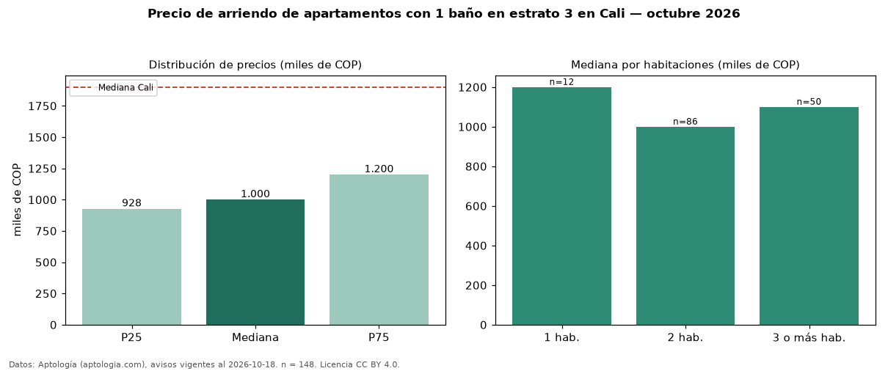

Precio de arriendo de apartamentos con 1 baño en estrato 3 en Cali — octubre 2026
En Cali, la mediana de canon mensual de apartamentos con 1 baño en estrato 3 es COP 1,00 millones, según 148 avisos vigentes. Eso es 11 % menos que la mediana de los apartamentos en estrato 3 en arriendo de Cali (COP 1,12 millones, n = 263); este segmento reúne el 56 % de esos avisos. Por metro cuadrado, la mediana es COP 20.000/m² al mes (n = 108), 8 % por debajo de los apartamentos en estrato 3 en arriendo de Cali (COP 21.743/m²). El área mediana anunciada es 60 m². El segmento con más oferta es el de 2 habitaciones (86 avisos, mediana COP 1,00 millones); pasar de 1 habitación a 3 o más habitaciones cambia la mediana −8 %. La mediana de todos los apartamentos en arriendo de Cali es COP 1,90 millones (−47 % de diferencia). 36 % de los avisos con el dato declara parqueadero. La mitad central de los avisos va de COP 927.500 a COP 1,20 millones (razón 1,3), una dispersión baja. Datos: Aptología (aptologia.com), CC BY 4.0 — https://www.aptologia.com/arriendo/cali. Archivos: PDF, CSV con las cifras y gráfica PNG.

| Avisos únicos | 148 |
|---|---|
| Percentil 25 | COP 927.500 |
| Mediana | COP 1.000.000 |
| Percentil 75 | COP 1.200.000 |
| Mediana por m² | COP 20.000 |
Fuente: avisos vigentes de portales inmobiliarios recopilados por Aptología, deduplicados (mínimo 30 avisos únicos por celda). Precios pedidos, no cerrados. Fecha: 2026-10-18.